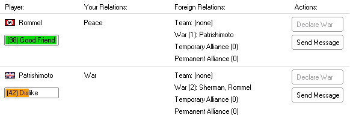

The Foreign Relations window shows the foreign relations status between all the nations in the game.

In this example, we have two other players: Rommel and Patrishimoto. On the left, below Rommel's name
is the description "(98) Good Friends". This is Rommel's attitude towards you. The numerical value ("98")
ranges from 0 (hated) to 100 (friends). Patrishimoto, on the other hand, dislikes you.
The "Your Relations" column shows your official relations with the player. You are at peace with Rommel, and at war with Patrishimoto.
The "Foreign Relations" column shows each players relations to other players. Rommel is not a part of any team, is at war with Patrishimoto,
and has no alliances. Patrishimoto is at war with you ("Sherman") and Rommel.
The "Actions" column lets players interact with that player - declaring war on them, sending
a message, or trading with them (available through the "Send Message" interface).
Foreign Relations can be changed by these actions:
Forming Alliances (through an Agreement; requires permission from the other player),
Peace Agreements (through an Agreement; requires permission from the other player),
Making a Declaration of War (done unilaterally, this switches your nation's policy towards another nation to 'war', the other nation can choose whether or not to change their official status towards you),
Giving your units orders to attack another player (both sides switch to war status when the attack occurs),
Trading with a Player (improves the other players attitude towards you)
Related Topics:
(None)